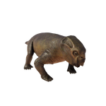

Useful Website
Notable for its short legs and the two large tusk-like teeth protruding from either side of its mouth, the dicynodont Lystrosaurus is an herbivorous therapsid that existed during the late Permian and early Triassic periods, approximately 250 million years ago. In fact, at one stage Lystrosaurus made up around 95% of all land vertebrates, having survived the Permian-Triassic extinction event that destroyed the majority of all life on earth.
